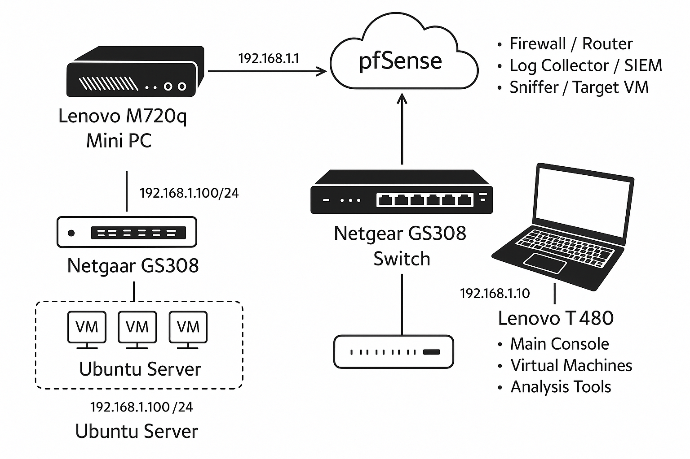

🔵 Blue Team Home Lab Details
This project outlines the setup of a personal cybersecurity lab using a Lenovo ThinkPad T480, leveraging VirtualBox or VMware Workstation Player for hosting various virtual machines for offensive and defensive security exercises. The lab focuses on analyzing logs with Splunk, network packets with Wireshark, and managing a robust environment for continuous learning and incident response practice.
💻 Primary Hardware: Lenovo ThinkPad T480
- CPU: Intel Core i5-8250U (8th Gen)
- RAM: 16GB DDR4
- Storage: 512GB SSD
- Display: 14” FHD (1920x1080)
- OS: Windows 11 Pro
- Ports: USB-C, USB 3.0, Ethernet, HDMI
📋 Key Tasks
- Run VirtualBox or VMware Workstation Player for hosting:
- Kali Linux (offensive tools)
- Ubuntu (target or SIEM log source)
- Windows 10 Eval (log source, client system)
- Analyze:
- Logs in Splunk
- Network packets in Wireshark
- Vulnerability scan results
- SSH into the mini PC or other devices
- Write incident reports, study, and manage your lab
🛠️ Key Tools
- VirtualBox / VMware: Run virtual machines (VMs)
- Kali Linux ISO: Pentesting tools – kali.org
- Ubuntu ISO: Lightweight VMs – ubuntu.com
- Windows 10 ISO: Client VM – Microsoft Eval
- Wireshark: Packet analysis – wireshark.org
- Nmap/Zenmap: Network scanning – nmap.org
- Splunk Free: SIEM/log analysis – splunk.com
🔌 Network Component: Netgear GS308 – 8-Port Unmanaged Gigabit Switch
- Type: Unmanaged
- Use Case: Simple plug-and-play connectivity
💡 Ideal for:
- VirtualBox or VMware Workstation VMs
- Log analysis and security tools (Splunk, Wireshark)
- Portability with power
🖼️ Blue Team Lab Network Diagram
A visual representation of my lab's network setup:
